(~kenyz: tell your wife not to miss me too much) 5 years, 10 months ago -
(~kenyz: tell your wife not to miss me too much) 5 years, 10 months ago - ![[Quote]](./Subtitles-Convert-Bluray-SUP-to-SRT-_-Approved-Tutorials-_-Support-_-Forums_files/page_copy.png "Quote")
Introduction
I will walk you through a step-by-step process to rip subtitles from BluRay Disc ( or attempt to
 )
)Required Tools and Dependencies
1. Download Subtitle Edit - Program to OCR Images to Text
2. Download MeGUI - Program to Convert/Extract Audio/Video/Subtitles from BluRay Discs (Used soley for extracting .sup files)
Instructions
1. Open up MeGUI
1a. Tools > HD Streams Extractor
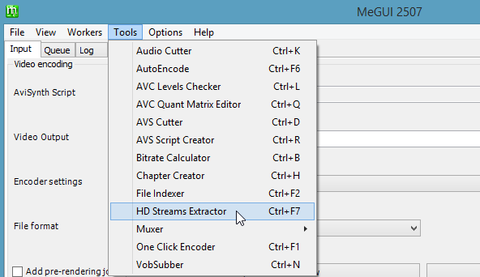
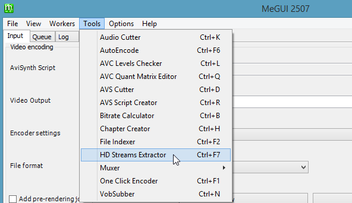
2. Select a source folder
2a. 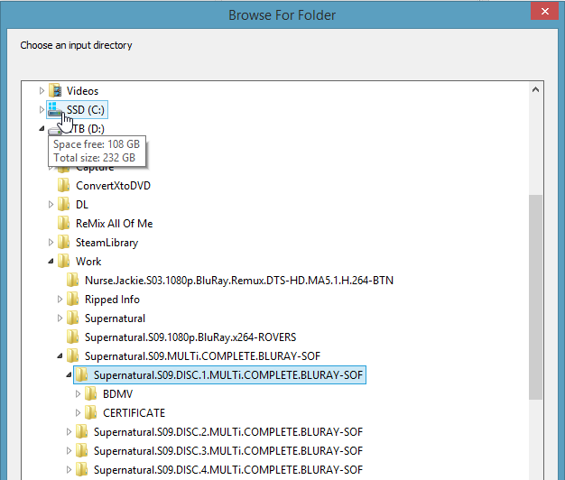
3. Select stream along with the subtitle file (SUP)
3a. 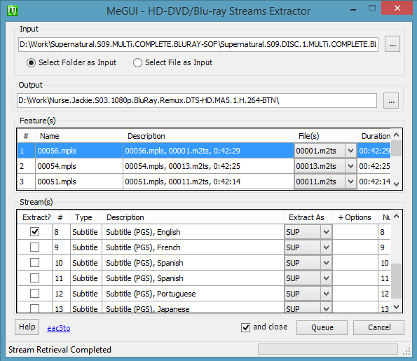
4. Go the the Queue Tab and click Start
4a. 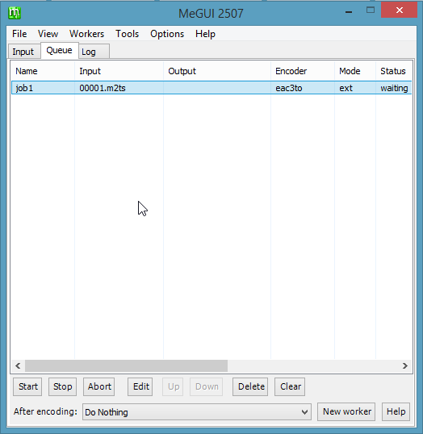
5. Open your sup file with Subtitle Edit
5a. 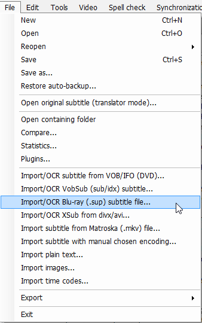
6. Click Start OCR
6a. 
6b. Make Necessary Changes as they come up.
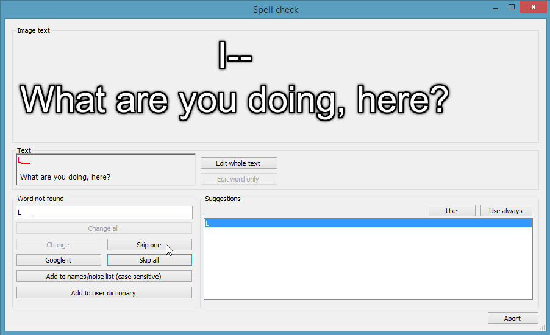
to
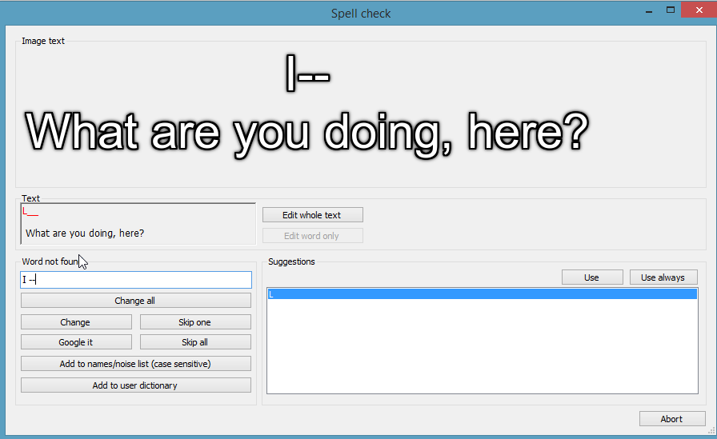
6c. Ignore any words that OCR Correctly, but are not known within the dictionary.
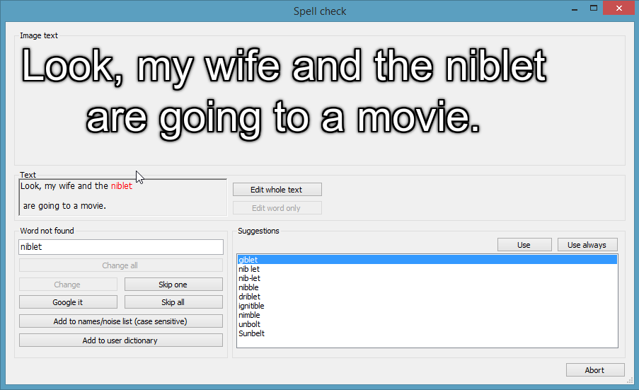
6d. Once complete click ok.
6b. Make Necessary Changes as they come up.
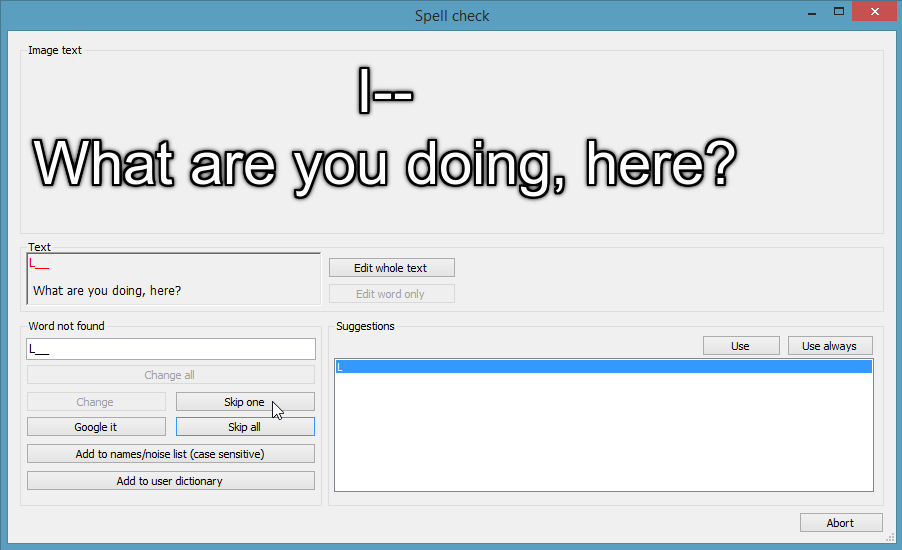
to
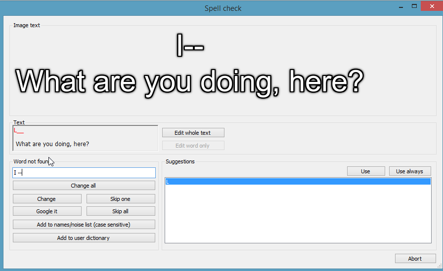
6c. Ignore any words that OCR Correctly, but are not known within the dictionary.
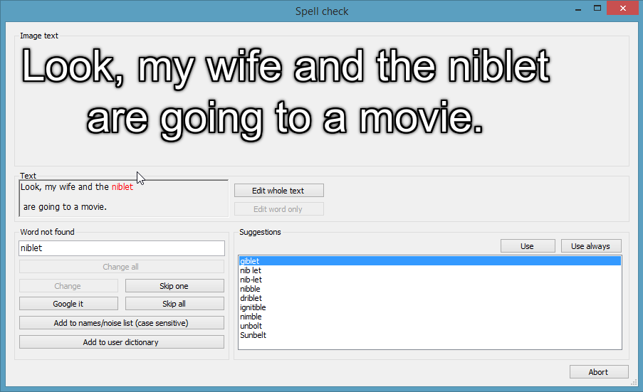
6d. Once complete click ok.
7. Start Spell Checking and validate what has been OCR'd has been done so, correctly. Make any changes to incorrectly OCR'd text as necessary.
8. Once complete with spell check, save the file as .srt [Should be default]
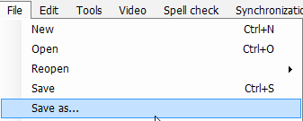
9. Rename the file according to Series Season + Episode + Release
EG: The.100.S01E01.1080p.BluRay-BTN.srt
Footer
Thanks to the fabulous people here on BTN

Special Thanks to cSx, Sabooo and all other guys on HiSD for all the hard work and help they have given to me.